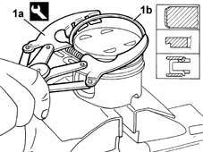
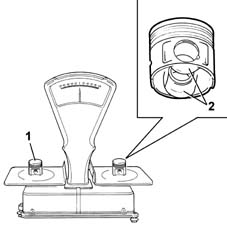
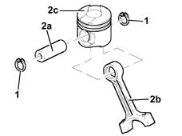
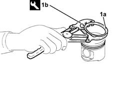
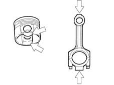
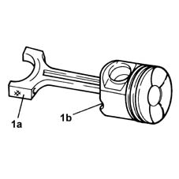

1028H60 piston, pin set - replace
- Path
- Procedures > 10 ENGINE UNIT > 1028 PISTONS AND CONNECTING RODS > 1028H pistons and connecting rods > 1028H60 piston, pin set - replace
- Kind
- repair procedure (removal / refitting; the operation number is the code)
- Applies to
- all engines; all production periods
- Interactive page
- https://sloeber94.github.io/elrnDB-fMltpl/en/#/2892348
Applies to: engines: 1.6 16v; all production periods
 Dismantling
Dismantling
 Reassembling
ReassemblingCarry out op. 1028H54 operation to be carried out on the entire set of pistons.
1. Using suitable pliers (1a), remove the circlips (1b) from the piston.
 | Name | Country |
|---|---|---|
1a | Tool for Extracting/Fitting | 1.860.183.000 |

Applies to: engines: 1.6 16v; all production periods
Reassembling
DismantlingClean the carbon residues from the piston crown.
1. Check that the difference in weight between the pistons is within the recommended values.
2. Slight maching in the areas shown in the diagram is permissible to equalize the weight.
 | Measurement | Value | |
|---|---|---|---|
- | Piston weight difference (g.) | +- 5 |

Applies to: engines: 1.6 16v; all production periods
Check the connecting rod alignment using a sample pin.
If the connecting rod is out of alignment, replace it.
Using the same pliers, fit the circlips on the piston.
| Name | Country |
|---|---|---|
- | Tool for Extracting/Fitting | 1.860.183.000 |
Complete op. 1028H54 operation to be carried out on the entire set of pistons.
Applies to: engines: 1.6 16v; all production periods
Dismantling
ReassemblingDismantling procedure.
| Measurement | Value | |
|---|---|---|---|
- | Piston weight difference (g.) | 5 |
Applies to: engines: 1.6 16v; all production periods
Reassembling
DismantlingAssembly procedure.
Applies to: engines: 1.9 JTD 8V; all production periods
Dismantling
Reassembling1. Remove the circlips.
2. Remove the pin (2a) and separate the connecting rods (2b) from the pistons (2c).

Applies to: engines: 1.9 JTD 8V; all production periods
1. Remove the flexible bands (1a) from the pistons using the tool (1b).

Applies to: engines: 1.9 JTD 8V; all production periods
Reassembling
DismantlingCheck the alignment of the connecting rods using a suitable tool; if it is not perfect, replace the connecting rod.
Check that the difference in weight between the pistons is within the recommended values.
| Measurement | Value | |
|---|---|---|---|
- | Piston weight difference (g.) | +- 5 |
Check that the difference in weight between the connecting rods, complete with bearing shells, caps and bolts, is within the recommended values.
| Measurement | Value | |
|---|---|---|---|
- | Connecting rod weight difference (g.) | 2.5 |

Applies to: engines: 1.9 JTD 8V; all production periods
Fit the piston rings using the tool.
| Name | Country |
|---|---|---|
- | Tool for Extracting/Fitting | 1.860.183.000 |
1. Join the connecting rods to the pistons so that the number stamped on the big end (1a) is facing the oil spray outlet (1b) in the piston.
Fit the pins and secure them using the circlips.
